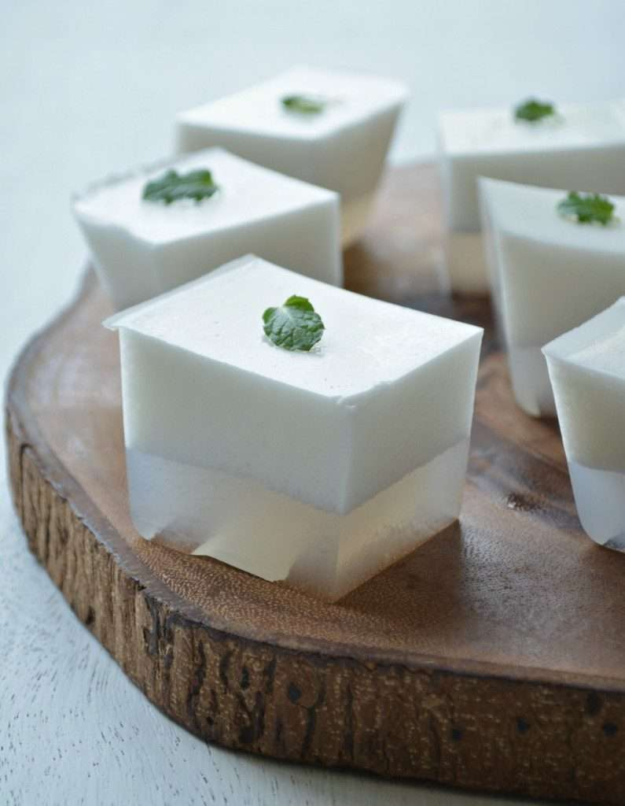
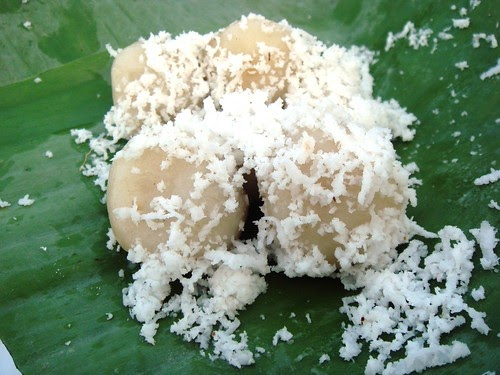
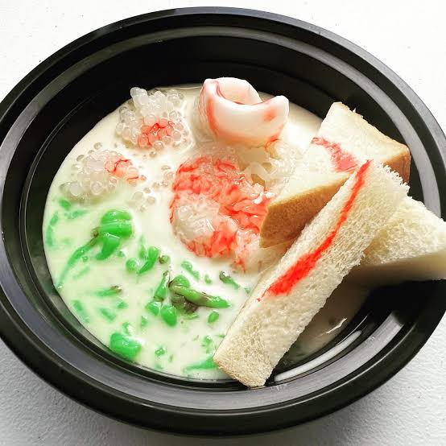

Simple Recipes To Follow Along

အုန်းနို့ ကျောက်ကျော
Time to finish: 30 minutes to 1:00 hour
လက်ဖက်သုတ်
မုန့်ဟင်းခါး
Time to finish: 2 hours to 3 hours
မုန့်ဖတ်သုတ်

မုန့်လုံးရေပေါ်
Time to finish: 2 hours or 3 hours
ငါးထမင်းနယ်
အုန်းနို့ ခေါက်ဆွဲ
Time to finish: 1:00 hour to 2 hours
ရှမ်းခေါက်ဆွဲ
Time to finish: 1:00 hour to 1:30 hours

ရွှေရင်အေး
သာကူပြင်